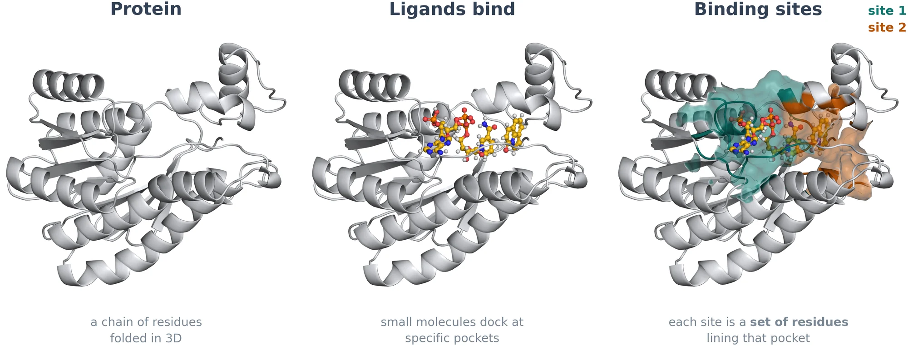
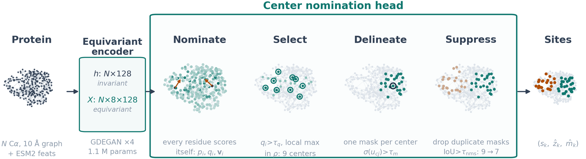
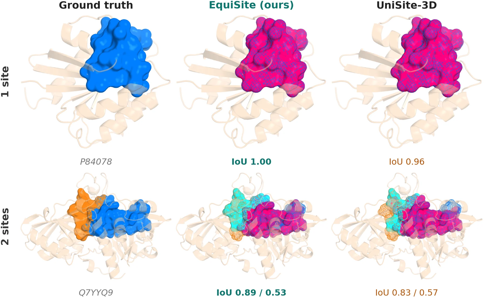

In one paragraph
A protein can bind ligands at several sites, so predicting them means predicting a set of residue masks. EquiSite does this with no clustering, no learned queries and no Hungarian matching. Every labelled site names one of its own residues as its anchor; every residue scores itself as a candidate anchor; each selected residue paints its own mask.
A controlled swap attributes most of the accuracy gain to this head. The equivariant encoder is what keeps the model small and its predictions consistent under rigid motion.
Part 1 · The task
What is being predicted?
A ligand binding site is the set of residues lining a pocket where a small molecule docks. Finding these sites is an early step in structure-based drug design.
Many proteins have more than one. In UniSite-DS, the benchmark used throughout this page, 31.9% of the 11,510 proteins have two or more labelled sites (1.58 on average, up to 38). So the output is not one label per residue. It is a set: an unknown number of sites, each a subset of the protein's residues with a confidence score.

Formally, the model maps a protein graph \(\mathcal G\) with \(N\) residues to
where each element is one predicted site: a score, a 3D center and a residue mask. The number of sites \(\widehat K\) is itself an output.
Two things make this harder than classifying residues one by one.
- Sites touch and overlap. In UniSite-DS, 6.9% of binding residues belong to more than one site. A pipeline that first labels residues as binding or not, and then clusters them, has to pull apart pockets that share residues.
- A set has no order. Before the loss can compare a prediction with a labelled site, something has to decide which prediction is responsible for which site.
We score predictions as UniSite does. Predictions from all test proteins are ranked by confidence; a prediction counts if its residue-IoU with a labelled site that has not been claimed yet reaches a threshold (0.5 or 0.3); and the ranked list is summarised by average precision (AP).
Part 2 · The idea
Who is responsible for which site?
Every set-prediction model needs a rule that pairs predictions with labelled sites during training. UniSite, the current state of the art, follows DETR: a fixed set of learned queries each propose a site, and Hungarian matching pairs queries with labelled sites by solving an assignment problem on the current predictions, at every training step. The rule is general. It assumes nothing about what the objects are.
EquiSite explores a more task-specific alternative. A binding site is not an arbitrary region of space; it is a set of residues. So each site can designate one of its own residues as its representative: the member residue nearest the site's centroid. We call it the site's anchor. That residue is responsible for the site, and the pairing is read off the labels once, before training starts.
Learned queries + Hungarian matching
The pairing is solved again from the current predictions at each step.
Residue anchors (EquiSite)
The pairing is a property of the labels. Nothing is solved.
Key idea
Hungarian matching is unnecessary once a deterministic, residue-based canonicalization of the sites is imposed. Detection then becomes a question that every residue answers about itself: am I the anchor of a site?
How is the anchor chosen?
The rule is two lines. Compute the site's centroid, then take the member residue closest to it. If two overlapping sites would choose the same residue, the larger site chooses first and the other takes its next-nearest member, so anchors stay distinct.
On UniSite-DS the anchor sits a median 4.0 Å from its site's centroid (90th percentile 5.9 Å), roughly a third of the way from the centroid to the edge of a typical site. The tie-break rarely matters: it changes the chosen residue in fewer than 1% of cases.
Part 3 · The center nomination head
From residues to a set of sites, in four steps
An SE(3)-equivariant encoder reads the protein as a graph: one node per residue at its Cα position, edges within 10 Å, and frozen ESM-2 embeddings as node features. It returns two things per residue, invariant features \(h_i\) and equivariant, steerable features \(X_i\). The center nomination head turns these into sites.

1 · Nominate
Each residue predicts three quantities in parallel: an objectness \(p_i\) (am I in any site?), a centerness \(q_i\) (am I the anchor of one?) and a vote \(\mathbf v_i\) (which way is my site's centroid?).
\(\varphi_p,\varphi_q\) are small MLPs and \(\mathbf w\) is a bias-free mix of the \(\ell{=}1\) channels of \(X_i\), so the vote rotates with the protein. Only \(q\) drives the decoding. \(p\) and \(\mathbf v\) are auxiliary signals that shape the shared encoder during training.
2 · Select
A residue next to an anchor looks almost as central as the anchor, so \(q\) rises smoothly across a pocket instead of spiking at one residue. Thresholding alone would emit many near-duplicates, so we keep only the confident local maxima:
with \(\tau_q=0.3\) and \(\rho=8\) Å. If no residue passes, the single highest-scoring one is kept. This is one deterministic pass, with no iterations, bandwidth or initialisation.
3 · Delineate
Each selected center \(c\) now segments its own residues. For every residue \(j\),
and \(\sigma(u_{cj})\) is the probability that \(j\) belongs to the site centered at \(c\). Thresholding gives the mask, its score and its 3D center:
with \(\tau_m=0.4\).
4 · Suppress
Select separates centers by distance, but two centers more than \(\rho\) apart can still paint nearly the same residues. Greedy non-maximum suppression over the masks removes such duplicates: keep the best-scoring mask, drop every other mask whose IoU with it is at least \(\tau_{\text{nms}}=0.5\), and repeat. Whatever survives is the prediction, so the number of sites is decided by the model.
What to look for.
Some things to try:
- On Q939U1, step through the tabs. 26 residues clear \(\tau_q\), 9 of them are local maxima, 7 masks survive, and the two labelled sites are the two top-ranked predictions. The five extras score less than half as much, which is what a ranking metric rewards.
- Slide \(\rho\) down to off. Select now hands every confident residue to the mask head, and Suppress has to clean up the near-duplicates on its own.
- On Q5NGQ3, two sites share residues and lie 9.4 Å apart. Five centers are selected; Suppress merges them into exactly the two labelled sites.
- On Q9LLQ2, five small sites crowd together and the paper's values find three. Set \(\rho=4\) Å and \(\tau_{\text{nms}}=0.70\): all five are found, among four times as many predictions. The last part measures that trade-off on the whole test set.
Part 4 · Supervision
Training without matching
Because every labelled site has named its anchor \(c_k\), every training target is fixed before the first gradient step. From the site masks \(\mathbf m_k\) and the anchors we build four targets, once, offline:
- Centerness \(q^\star_i\): 1 on the \(K\) anchors and 0 elsewhere. One positive per site among hundreds of residues, so its focal loss carries the largest weight.
- Objectness \(y_i\): 1 if residue \(i\) lies in any site.
- Vote \(\mathbf v^\star_i\): the offset from a site residue to its site's centroid.
- Masks: for each labelled site, the mask head is conditioned on that site's true anchor, and its output is compared with that site's mask alone.
The first three terms are dense, per-residue losses. The last is per-site, and it needs no matching because the anchor says which mask output belongs to which site. At inference the mask head is conditioned on the predicted centers instead. The Labels tab of the explorer above shows these targets on real proteins.
Are the auxiliary signals needed?
Objectness and votes never enter the decode, so it is fair to ask what they are for. We retrained without each.
Predictions per protein:
The per-site mask term matters far more than either auxiliary. Without the mask head, sites have to be formed by assigning each binding residue to the nearest center through its vote, and AP@0.5 drops from 0.464 ± 0.007 to 0.201 ± 0.012 over three seeds.
Part 5 · Symmetry
What does equivariance buy?
Rotate or translate a protein and its binding sites move with it. Which residues form a site does not change. EquiSite has this built in. For a fixed neighbourhood graph, every scalar it produces (objectness, centerness, mask logits, and therefore the masks and their scores) is invariant to rigid motions; votes rotate with the structure, and predicted site centers move with it. This is Proposition 1 of the paper:
We checked this on all test proteins, applying a random rotation and translation to each and re-running the whole model. return exactly the same ranked list of sites. The two that do not are instructive.
- An edge at the cutoff. In proteins a pair of residues sits within about 10−4 Å of the 10 Å graph cutoff, and float32 round-off in the moved coordinates flips that edge. Centerness scores then shift by up to , and in one of the two proteins Suppress keeps a different mask. This is the "fixed neighbourhood graph" condition of the proposition at work.
- A near-tie. In one protein the sites are identical but two almost equal scores swap rank. The cause is round-off in the float32 pairwise-distance routine; with exact distances the ranking is identical too.
A property, not the source of the gain
We do not claim that equivariance is what makes EquiSite more accurate. In the swap experiment below, exchanging only the encoder accounts for 11% of the AP@0.5 gain (16% at AP@0.3). What the equivariant encoder contributes is a lightweight, pose-consistent backbone: about 1.1M parameters, where the encoder stack of UniSite-3D has about 26M.
Part 6 · Results
How well does it work?
EquiSite and UniSite-3D are trained on UniSite-DS with its official split at 90% maximum sequence identity (9,217 training and 2,293 test proteins), and take the same inputs: the structure and frozen ESM-2 embeddings.
Where does the gain come from?
EquiSite differs from UniSite-3D in both its encoder and its head, so the comparison above cannot say which change matters. We trained the two hybrids to find out.
Encoder
Head
Does it hold as the number of sites grows?
Less similar test proteins
UniSite-DS ships stricter splits in which no test protein exceeds 70% or 50% sequence identity with the training set. Each model is retrained on each split.
| AP@0.5 | AP@0.3 | |||
|---|---|---|---|---|
| Max. train/test identity | UniSite-3D | EquiSite | UniSite-3D | EquiSite |
| 90% | 0.3835 | 0.4674 | 0.5603 | 0.6237 |
| 70% | 0.3734 | 0.4534 | 0.5579 | 0.6221 |
| 50% | 0.2801 | 0.3834 | 0.4677 | 0.5575 |
Predicted structures
In practice binding sites are often sought on predicted structures. For the 2,161 test proteins with an AlphaFold model, we ran the same checkpoint on AlphaFold coordinates in place of the experimental ones. AP@0.5 moves from 0.4764 to 0.4706 and AP@0.3 from 0.6324 to 0.6249, a change under 0.008.
| Mean pLDDT of the model | Proteins | Cα RMSD to experiment | AP@0.5, experimental | AP@0.5, AlphaFold | Change |
|---|---|---|---|---|---|
| 94.5 or lower | 541 | 2.62 Å | 0.4538 | 0.4310 | −0.0228 |
| 94.5 to 96.2 | 540 | 1.35 Å | 0.4631 | 0.4570 | −0.0061 |
| 96.2 to 97.4 | 540 | 0.78 Å | 0.4844 | 0.4877 | +0.0033 |
| 97.4 or higher | 540 | 0.54 Å | 0.5265 | 0.5330 | +0.0064 |
Other benchmarks
HOLO4K-sc and COACH420 are the standard single-chain benchmarks of the binding-site literature. For this comparison EquiSite is trained on the benchmark split of UniSite-DS and applied to the two sets without further training. DCC and DCA are the classical center-distance success rates.
| HOLO4K-sc | COACH420 | |||||
|---|---|---|---|---|---|---|
| Method | AP@0.3 | DCC | DCA | AP@0.3 | DCC | DCA |
| Fpocket | 0.2711 | 0.3076 | 0.4382 | 0.2106 | 0.2708 | 0.4107 |
| Fpocket-rescore | 0.5899 | 0.5183 | 0.7654 | 0.5602 | 0.4405 | 0.7113 |
| P2Rank | 0.6011 | 0.5300 | 0.8188 | 0.6188 | 0.4643 | 0.7411 |
| DeepPocket | 0.5415 | 0.4925 | 0.7369 | 0.5184 | 0.3958 | 0.6756 |
| GrASP | 0.6668 | 0.5131 | 0.7416 | 0.7150 | 0.4851 | 0.7620 |
| VN-EGNN | 0.2606 | 0.5861 | 0.6999 | 0.2637 | 0.5446 | 0.7530 |
| UniSite-3D | 0.7091 | 0.5716 | 0.7879 | 0.7196 | 0.4702 | 0.7381 |
| EquiSite | 0.7786 | 0.7176 | 0.8624 | 0.6928 | 0.5556 | 0.7544 |
Size and speed
| UniSite-3D | EquiSite | Ratio | |
|---|---|---|---|
| Trainable parameters | 32.8M | 1.2M | 27× |
| Model forward pass, per protein | 49.3 ms | 9.2 ms | 5.4× |
| ESM-2 embedding, per protein (both models) | 29.8 ms | 29.8 ms | 1× |
| End to end, per protein | 79.1 ms | 39.0 ms | 2.0× |
What the predictions look like

Part 7 · Error analysis
Where does it still fail?
At the paper's settings EquiSite recovers 58% of the labelled test sites at IoU ≥ 0.5: 2,119 of 3,645. We traced each of the 1,526 misses to the first stage of the decode that lost it.
Three quarters of the misses (1,146 of 1,526) are a learning problem rather than a decoding problem: the site was never nominated, or its mask was not good enough. The share that is never nominated grows sharply in proteins with four or more sites (271 of 625 misses), where sites are small and crowded. The two suppression steps cost less. Select accounts for 276 misses, of which 55 involve two labelled sites closer together than \(\rho\). Suppress accounts for 104, or 2.9% of all labelled sites.
Both suppression steps are a trade
Select and Suppress each remove candidates, and each occasionally removes a correct one. Loosening them on the whole test set shows what they buy.
| Decode setting | AP@0.5 change | AP@0.3 change | Sites found at IoU ≥ 0.5 | Predictions per protein |
|---|---|---|---|---|
| Paper: ρ = 8 Å, τnms = 0.5 | 0 | 0 | 58.1% | 4.47 |
| ρ = 6 Å | +0.006 | +0.008 | 60.3% | 5.92 |
| ρ = 4 Å | +0.010 | +0.011 | 62.0% | 7.64 |
| Select off | +0.013 | +0.013 | 63.1% | 9.20 |
| Suppress off | −0.017 | −0.049 | 61.0% | 5.85 |
| Both off | −0.060 | −0.128 | 70.1% | 21.27 |
A smaller \(\rho\) finds more sites and nudges AP up, while doubling the number of predictions per protein and the number of mask-head evaluations. The paper's value of 8 Å takes the compact end of that trade. Suppress is the opposite case: without it AP falls, because near-duplicate masks crowd the ranking.
Limitations
- Many-site proteins remain hard. With four or more sites per protein, AP@0.5 is 0.121. Most misses there are sites that no residue nominated.
- One residue stands for a site. Two sites whose anchors lie within \(\rho\) compete in Select. 8.8% of labelled site pairs in the test set have centroids closer than 8 Å.
- Predicted structures: robustness has been shown only for high-confidence AlphaFold models.
- The auxiliary-loss ablation is a single seed per setting. For scale, the full model's AP@0.5 varies by ±0.007 across three seeds.
- The language model is not free. Frozen ESM-2 embeddings are an input and dominate end-to-end inference time.
Reference
Cite
@inproceedings{animesh2026equisite,
title = {EquiSite: Equivariant Graph Neural Networks for End-to-End
Prediction of Multiple Ligand Binding Sites},
author = {Animesh Animesh and Plaban Kumar Bhowmick and Pralay Mitra},
booktitle = {The Fifth Learning on Graphs Conference},
year = {2026},
url = {https://openreview.net/forum?id=wBMHDA5q2S}
}
EquiSite builds directly on UniSite and its UniSite-DS benchmark, whose data, baselines and evaluation protocol we use throughout, and on DETR, CenterNet, HEGNN and ESM-2. Full references are in the paper.